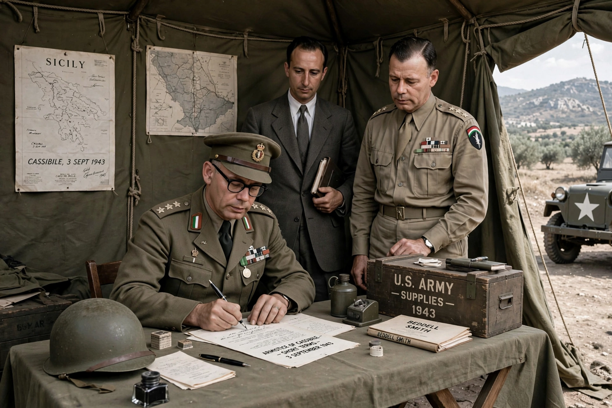

The Armistice of Cassibile was an armistice signed on 3 September 1943 between Italy and the Allies, and announced on 8 September 1943, ending Italy's participation in World War II on the Axis side. It was signed at Cassibile, near Syracuse, Sicily.

| Armistice of Cassibile | |
|---|---|
| Signed | 3 September 1943 |
| Announced | 8 September 1943 |
| Signatories | Giuseppe Castellano (Italy); Walter Bedell Smith for the Allies / Dwight D. Eisenhower |
After the Allied invasion of Sicily and the fall of Mussolini on 25 July 1943, Marshal Pietro Badoglio's government secretly negotiated with the Allies while publicly proclaiming continued loyalty to Germany. General Giuseppe Castellano signed the "short armistice" terms at Cassibile under a tent at Fairfield Camp.
General Eisenhower and Badoglio announced the armistice on 8 September, just before the Allied landing at Salerno. Germany immediately executed Operation Achse, disarming Italian forces, occupying northern and central Italy, rescuing Mussolini and installing the Italian Social Republic. The King and government fled Rome to Brindisi. Italy declared war on Germany on 13 October 1943 as a co-belligerent; Italian soldiers who resisted were massacred in places such as Cephalonia. A longer set of terms was signed at Malta on 29 September.